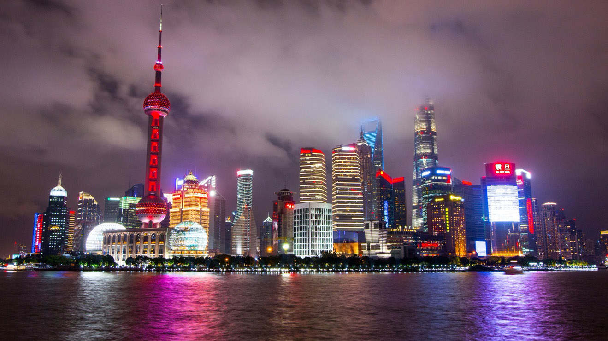
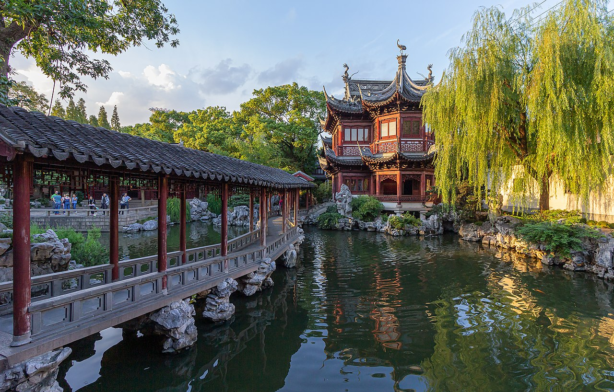
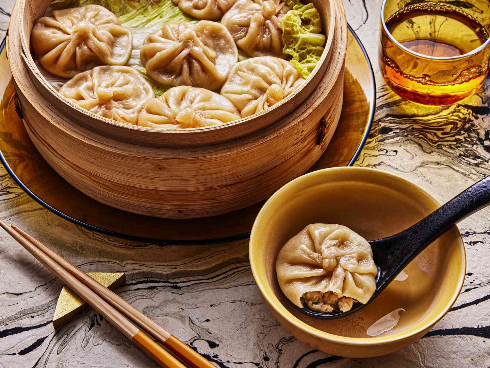

Jornadas Asiáticas: Um Diário de Bordo Pelo Continente
Bem-vindo ao nosso cantinho de descobertas. Aqui, compartilhamos não apenas roteiros, mas as histórias, os sabores e as sensações que transformaram nossas viagens pela Ásia em memórias inesquecíveis.
Xangai: Um Horizonte de Histórias e Futuros
Xangai é uma cidade que vive em dois tempos ao mesmo tempo. De um lado do rio Huangpu, a arquitetura europeia do Bund conta histórias de um século passado. Do outro, as torres de Pudong rasgam o céu, anunciando o futuro. Estar aqui é testemunhar esse diálogo fascinante entre épocas.
O Bund e Pudong: Um Contraste Espetacular

O skyline de Pudong parece um cenário de filme, especialmente à noite.
Caminhar pelo calçadão do Bund é uma experiência obrigatória. Os edifícios históricos são imponentes, mas o verdadeiro espetáculo é olhar para o outro lado do rio e ver o horizonte de Pudong. A visão da Torre Pérola Oriental e da Torre de Xangai é a imagem que define a China moderna.
Um Mergulho na China Antiga

A serenidade e a arquitetura clássica do Jardim Yuyuan.
Para escapar da agitação futurista, nosso refúgio foi a Cidade Antiga. Caminhar por suas vielas estreitas, cruzar a Ponte das Nove Curvas e visitar o sereno Jardim Yuyuan foi como entrar em outro mundo. É a prova de que a alma da China antiga permanece viva.
Os Sabores Delicados de Xangai

Xiao long bao: uma explosão de sabor em cada mordida.
A culinária de Xangai é mais delicada e adocicada. A estrela da cidade é, sem dúvida, o xiao long bao, um dumpling recheado com uma sopa quente e saborosa. Passamos horas nos deliciando com eles e explorando os salões de chá tradicionais.